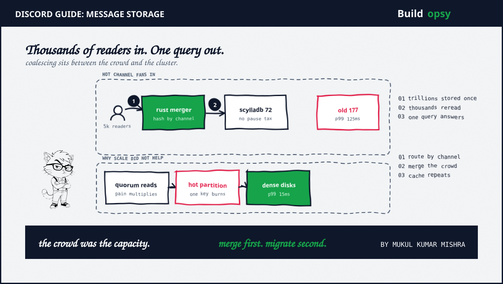

1. How Discord Stores Messages in 60 Seconds
Every message lands in one wide table partitioned by channel plus time bucket. Writes are trivially routable: one message, one place. Discord outgrew MongoDB, moved to Cassandra in 2017 on twelve nodes, then grew to 177 nodes holding trillions of messages by 2022. Then it migrated everything to ScyllaDB and landed on 72 nodes at 15ms p99.
The drama was never writes. Opening a popular channel fires thousands of reads at the same partition within seconds. Replicas queue, quorum consistency spreads the delay to neighboring queries plus JVM pauses stack on top. The cluster did not run out of disk. It ran out of schema.
2. The Components of Discord Message Storage
Clients open channels plus poll history over persistent connections. Rust data services sit in front of the database, route each channel to one instance by consistent hashing plus merge overlapping reads into single queries over gRPC. ScyllaDB stores the messages with Cassandra-compatible protocol plus no garbage-collection pauses. Denser hybrid storage pairs persistent disks with NVMe SSDs. Everything else, presence plus media plus notifications, lives outside the message path.
The ordering matters. Coalescing came before the engine swap and bought years of runway alone. Never ask the database the same question twice is a routing decision, not a hardware purchase.
3. Hot Partitions and Quorum Amplification
Partition by channel plus time and one hot channel concentrates 5,000 reads per second onto a single partition. At replication factor 3 with quorum reads, that becomes 10,000 replica reads against a handful of nodes. Double the hot channels on event night and the saturated set grows faster than the fleet, because every hot read multiplies across replicas while new nodes only dilute cold load.
Discord reads plus writes at quorum, so saturated nodes slow down strangers too: cold channels sharing hardware with a hot partition pay the hot partition's latency. Add Cassandra's garbage-collection pauses plus compaction backlogs and three queues stack. Tail latency drifted from 40ms toward 125ms at p99 while medians looked healthy. Medians lie about chat. Everyone notices the stuck message.
4. Request Coalescing: Ask Once
The fix routes one channel to one service instance, then merges every overlapping read for the same message into a single database query. Thousands of readers, one query. Consistent hashing matters here: random load balancing would scatter the crowd past the merger, while hash routing concentrates hot keys exactly where coalescing can reach them.
Then the engine swap removed the pause tax. ScyllaDB reimplements Cassandra storage in C++, keeping protocol plus queries while deleting stop-the-world garbage collection. Denser disks cut utilization by a modeled 53 percent. Together: 105 nodes retired, a 59 percent smaller fleet, p99 at 15ms. The migration itself staged recent data first plus backfilled history behind it. When the stock migrator projected three months, engineers rewrote it in Rust in about a day.
5. What It Costs
Model fleet cost from public cloud list prices for memory-heavy database machines plus attached SSDs and the 105 retired nodes land in the low millions per year, before counting the eliminated firefighting toil. The overkill was compound interest on a schema plus an engine plus an operating model, priced monthly.
Price your own read path with the RPS envelope calculator: a few million chat events per second at a blended price, sustained all month, dwarfs the database line. Every duplicate read eliminated upstream deletes its share of that envelope. The full overkill math lives in the deep postmortem.
6. The Verdict: What to Steal
Steal coalescing before hardware. Merging duplicate reads is a routing decision that costs one service layer plus retires whole fleets. Most read-heavy products I look at run a smaller version of this incident: a write-modeled schema, a hot key, a fleet sized for the average.
Steal the hot-set dashboards next. Track per-partition heat, per-replica queue depth, coalescing hit rate. The cluster is healthy when its hottest partition is bored. Steal the compatible swap last. Same protocol, no pause tax, evenings preserved.
Do not steal 72 nodes. That number belongs to Discord's crowd. What transfers is the order of operations: merge first, measure second, migrate third. Hardware is what you buy after the clever is exhausted, not instead of it.
177 nodes. 72 nodes. One coalescing layer. The crowd was the capacity all along.
7. Frequently Asked Questions
How does Discord store messages?
In a wide-column store partitioned by channel plus time bucket. Discord moved from MongoDB to Cassandra in 2017, then migrated trillions of messages to ScyllaDB, cutting 177 nodes to 72.
Why did Discord leave Cassandra for ScyllaDB?
Hot partitions plus JVM garbage-collection pauses pushed p99 latency toward 125ms across 177 nodes. ScyllaDB speaks the same protocol without the pause tax. A Rust coalescing layer removed duplicate reads first.
What is request coalescing?
Merging overlapping reads into one database query. Discord routes each channel to one service instance by consistent hashing, so thousands of readers opening the same channel cost a single query.
What database does Discord use now?
ScyllaDB for message storage at 15ms p99, with Rust data services in front. Relational stores were never the message path.
Sources and Method
Storage facts follow Discord Engineering publications plus ScyllaDB case coverage. Node counts, latencies plus migration steps come from the published accounts. Cost framing is modeled from public cloud list prices. For the complete analysis, see the full postmortem.